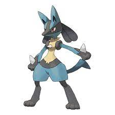

BIENVENIDOS A LAS REGIONES POKEMONS
REGION KANTO
La región de Kanto es una de las regiones ficticias en el mundo de Pokémon, y es el escenario principal de la primera generación de juegos de Pokémon, como Pokémon Rojo, Azul y Amarillo. Kanto es conocida por ser el hogar de muchos Pokémon icónicos de la franquicia, incluyendo a Pikachu, Charmander, Bulbasaur y Squirtle. La región está compuesta por varias ciudades y pueblos, cada uno con su propio gimnasio Pokémon dirigido por un líder de gimnasio. Los entrenadores viajan por Kanto para desafiar a estos líderes de gimnasio, recolectar medallas y eventualmente desafiar a la Liga Pokémon.
REGION JOHTO
La región de Johto es otra de las regiones ficticias en el mundo de Pokémon, que se introdujo en la segunda generación de juegos de Pokémon, incluyendo Pokémon Oro, Plata y Cristal. Johto se encuentra al oeste de la región de Kanto y presenta su propio conjunto de Pokémon, paisajes y desafíos.
INICIALES DE JOHTO:
- Chikorita
- Cyndaquil
- Totodile
REGION HOENN
La región de Hoenn es una región ficticia en el mundo de Pokémon que se introduce en la tercera generación de juegos de Pokémon, que incluye Pokémon Rubí, Zafiro y Esmeralda, así como sus remakes Pokémon Omega Ruby y Alpha Sapphire. Hoenn es conocida por su gran diversidad geográfica y una variedad de características únicas.
Los tres Pokémon iniciales de la región de Hoenn son:
Treecko: Treecko es un Pokémon de tipo Planta. Se asemeja a un pequeño lagarto verde con una cola similar a una hoja. Es ágil y ágil, y se especializa en movimientos rápidos y furtivos.
Torchic: Torchic es un Pokémon de tipo Fuego. Es un pequeño polluelo con plumaje naranja y una llama en la cabeza que indica su potencial para convertirse en un poderoso Pokémon de tipo Fuego.
Mudkip: Mudkip es un Pokémon de tipo Agua. Tiene una apariencia similar a un pequeño anfibio con una aleta en la cabeza. Se destaca en terrenos acuáticos y es conocido por su naturaleza amigable y su lealtad.
#FAVORITOS
Favorito de Luis Pleitez: LUCARIO

Lucario es un Pokémon de tipo lucha y acero que apareció por primera vez en la cuarta generación de juegos Pokémon, específicamente en Pokémon Diamond y Pearl. Es la evolución de Riolu, y es conocido por su apariencia canina, con características humanoides.
Favorito de Patrick Orellana: GIRATINA

Giratina es un Pokémon legendario de tipo fantasma y dragón que fue introducido en la cuarta generación de juegos Pokémon, en Pokémon Diamond y Pearl. Es conocido por su apariencia distorsionada y su vínculo con el mundo de los espíritus y la dimensión alternativa conocida como el Mundo Distorsión.